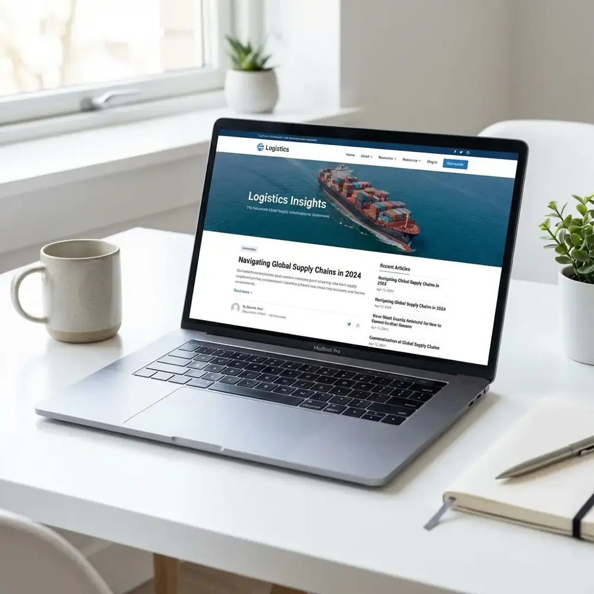

Thin industry knowledge
Surface-level articles miss the operational detail logistics buyers use to evaluate credibility.
We create useful logistics content that helps people find you, trust you, and understand why they should work with you.

We create content that helps logistics companies get found, build trust, and support their sales teams.
Surface-level articles miss the operational detail logistics buyers use to evaluate credibility.
Traffic has little value when content never connects a problem to the right service or next step.
One-off posts fail to build topical depth or support a coherent search strategy.
Technical accuracy, SME reviews, and unclear workflows can stop useful content from shipping.
You’ll always know what we’re working on, why it matters, and what comes next.
Review existing content, gaps, voice, and performance.
Focus on topics around buyer and business value.
Research, interview, write, edit, and design.
Optimize pages, links, metadata, and conversion paths.
Refresh winners and learn from search and sales data.
Audience and topic research. Search opportunity mapping. Editorial roadmap. Content briefs.
Service page copy. Articles and guides. Case studies. Sales enablement content.
On-page SEO. Internal linking. Expert review workflow. Conversion paths.
Publishing cadence. Content performance. Lead contribution. Refresh priorities.
Use your team’s knowledge to explain how your services work in real life.
Ask your team to review service claims and details before the work is published.
Give pages clear titles, useful links, and answers to the questions buyers search for.
Turn useful content into material your sales team can send to prospects.
Review visits and leads. Refresh useful pages as your services and markets change.
A clear plan, useful work, and regular checks on what happens next.
Agree on the audience, topics, and formats.
Gather source material and input from your team.
Draft the content and check facts with your team.
Publish approved work and review results over time.
Timing depends on the content scope, source material, and review process.
We write useful content for logistics firms. With input from your team, we create service pages, guides, and sales materials that explain your work and answer buyer questions.
We agree on the work and how we will track it before we start.
Talk through your goals with Alex and find useful next steps for your business.
We show you the numbers that matter: good leads, sales conversations, and what your team says is actually working.
See which leads are a real fit and which ones are just noise.
See what you’re spending, what we’re doing, and what is improving.
Follow the path from a click or visit to a real sales opportunity.
Our work is based on how logistics companies actually run and how customers choose them.
Content reflects the difference between modes, services, facilities, technology, and buyer requirements.
Subject-matter knowledge can be captured without consuming endless hours from operational teams.
Every asset should answer a real question or help a prospect make a decision.
Guides, service pages, case studies, and sales content work as one connected system.
We shape the work around your goals, budget, current website and tools, and how much help your team needs.
Content is created through research, existing materials, and subject-matter input, with your team approving technical claims.
We set up an interview and review process that fits the topic and the material you have.
Yes. Briefs and drafts can include keyword intent, structure, metadata, internal links, and conversion paths.
Scope can include service pages, articles, guides, case studies, landing pages, email, and sales enablement assets.
Cadence depends on authority, competition, resources, and goals. Consistency and quality matter more than arbitrary volume.
We track search views, visits, leads, and other useful actions. We also look for pages to update or expand.
Book a discovery call to talk through your logistics business, your customers, and the content that can help them find you, and where we can help.
Let’s talk about your content.
Schedule a Discovery CallNo pressure. Just a helpful talk about your business.